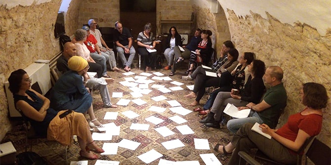
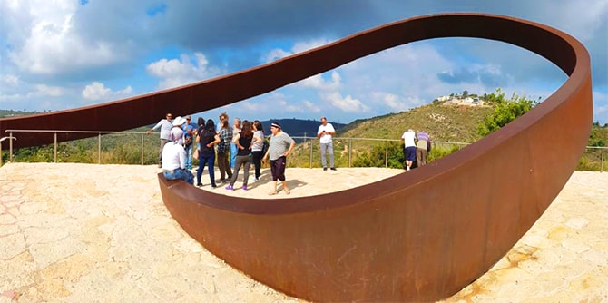

The fellows of the Mandel Program for Local Leadership in Yeruham and Ramat Hanegev embarked on a three-day retreat in Haifa to examine the milestones of their two-year learning journey. The retreat began with a visit to the Beit Ha’Gefen Arab-Jewish Culture Center, which is dedicated to building a shared society, and a visit to the open-air Museum without Walls in the Wadi Nisnas neighborhood. During these visits, the fellows heard about various issues relating to multicultural society and its limitations.
The following day, the fellows visited the Sacred Heart school (Maison de Sacré Coeur), directed by
Dr. Karim Nasser. This visit included an in-depth discussion on the meaning of giving and the meaning of the present for people with severe disabilities and those who care for them.

On the final day of the retreat, which was led by
Dr. Itzhak (Kiki) Aharonovich and
Dr. Noa Milman, the fellows visited the memorial for the victims of the Mount Carmel forest fire.
Dr. Smadar Ben-Asher then facilitated a photography workshop that explored concepts of growth and extinction in order to develop a conversation about the upcoming conclusion of the program and the end of the fellows’ shared learning journey. The workshop used a line from an Ehud Manor poem, “If I could only learn the ways of a single tree,” as its point of departure, and conveyed the idea that growth is the chosen path of nature.
The retreat used a variety of visual, musical, and textual techniques to review the main concepts explored during the two years of the program. Over the three days, the fellows examined the intensive leadership journey they have taken during the course of the two years, both as individuals and as a group. They also thought together about joint development and action in the future, and discussed leadership initiatives aimed at advancing the Yeruham and Ramat Hanegev region as whole, traversing municipal boundaries.

{kind=link}
{kind=link}